Global campaign expansion — matching actual renders Baseline on the left; shared Italian renderer expanded across the world on the right. Click a pair for the full 3840×1080 image. These are engine captures, not generated landscape illustrations. Geographic DEM and asset quality still limit polish; completed checkpoints mean implemented, captured and checked, not commercial-quality completion.
Eastern visual acceptance remains partial: coarse/fine shading facets are still visible in the eastern capture. The shared normal blending and world system are implemented; further transition work is required.
Greece Northern Balkans Aegean islands Anatolian interior Levant North African coast Nile Valley Nile Delta Interior Iberia Gaul Mesopotamia Iranian plateau Eastern campaign coverage Campaign overview Greece — BEFORE / AFTERLegacy avg FPS 136.1 → 142.8; p95 13.8 → 7.7 ms; RAM 1319.2 → 1190.7 MiB. Settled after: 144 FPS. 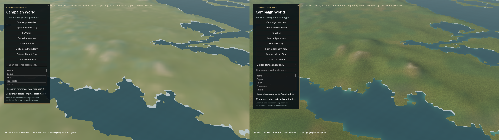
Northern Balkans — BEFORE / AFTERLegacy avg FPS 141.1 → 141.7; p95 9.4 → 7.9 ms; RAM 1176.9 → 1188.6 MiB. Settled after: 144.2 FPS. 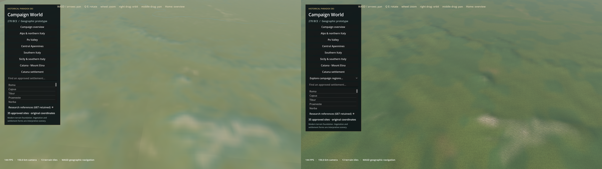
Aegean islands — BEFORE / AFTERLegacy avg FPS 143.5 → 142.2; p95 8.7 → 7.2 ms; RAM 1316.6 → 1171.1 MiB. Settled after: 143.9 FPS. 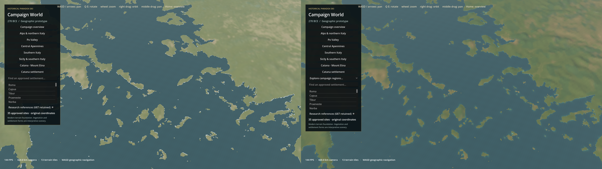
Anatolian interior — BEFORE / AFTERLegacy avg FPS 140.6 → 142.8; p95 9.3 → 7.6 ms; RAM 1131 → 1190.8 MiB. Settled after: 144.1 FPS. 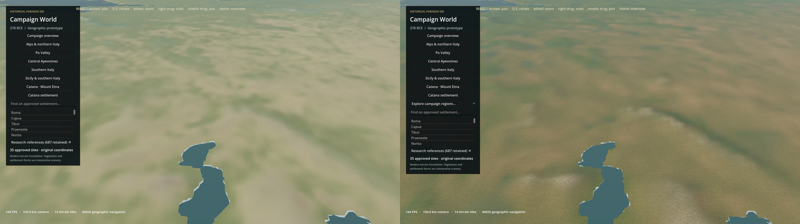
Levant — BEFORE / AFTERLegacy avg FPS 143 → 142.8; p95 8.7 → 7.5 ms; RAM 1113.7 → 1187.8 MiB. Settled after: 144.1 FPS. 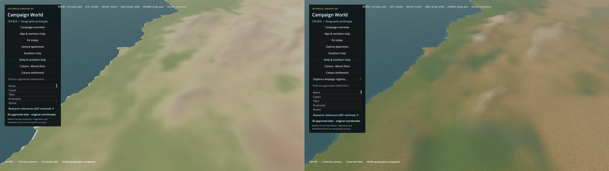
North African coast — BEFORE / AFTERLegacy avg FPS 142.1 → 144; p95 10.1 → 7.6 ms; RAM 1368.1 → 1184.7 MiB. Settled after: 144.2 FPS. 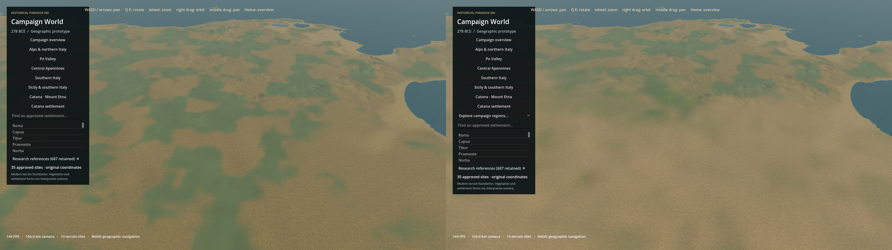
Nile Valley — BEFORE / AFTERLegacy avg FPS 143.1 → 141.1; p95 9.4 → 7.3 ms; RAM 1115.6 → 1174.9 MiB. Settled after: 144 FPS. 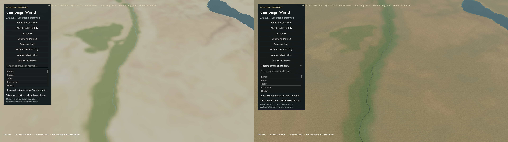
Nile Delta — BEFORE / AFTERLegacy avg FPS 142.8 → 141.4; p95 8.9 → 7.3 ms; RAM 1116 → 1172.4 MiB. Settled after: 144 FPS. 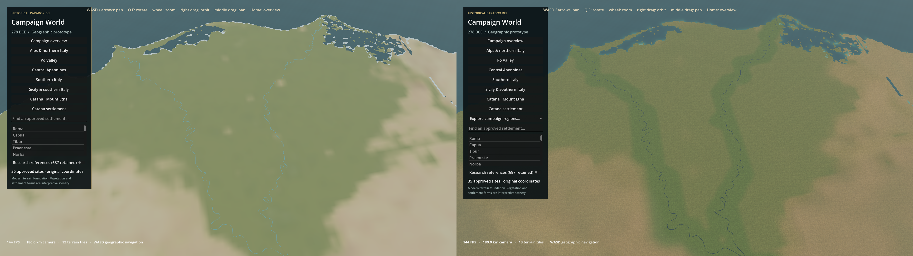
Interior Iberia — BEFORE / AFTERLegacy avg FPS 143.7 → 142.8; p95 9.2 → 7.7 ms; RAM 1114.5 → 1179.3 MiB. Settled after: 144.1 FPS. 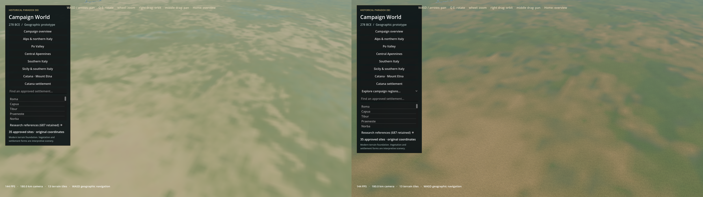
Gaul — BEFORE / AFTERLegacy avg FPS 143 → 135.5; p95 9.6 → 8.3 ms; RAM 1315.8 → 1177.9 MiB. Settled after: 137.6 FPS. 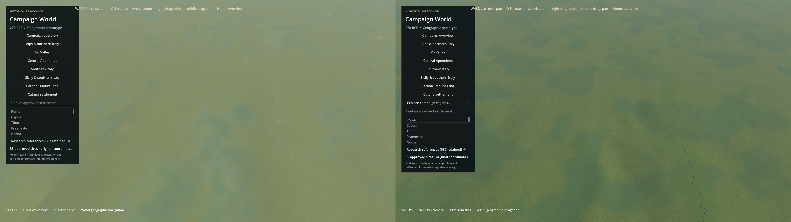
Mesopotamia — BEFORE / AFTERLegacy avg FPS 142.9 → 138.7; p95 9.4 → 7.6 ms; RAM 1115.3 → 1175.8 MiB. Settled after: 143.9 FPS. 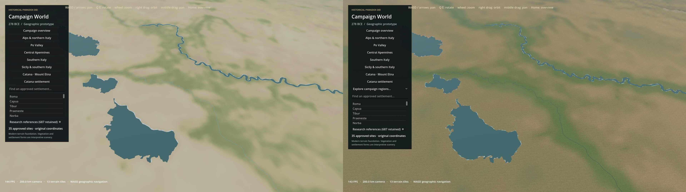
Iranian plateau — BEFORE / AFTERLegacy avg FPS 142.8 → 142.5; p95 9.1 → 7.5 ms; RAM 1114.6 → 1174.3 MiB. Settled after: 143.9 FPS. 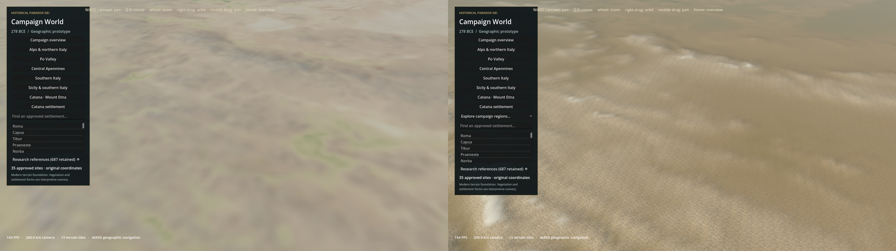
Eastern campaign coverage — BEFORE / AFTERLegacy avg FPS 143.6 → 137.7; p95 8.7 → 7.6 ms; RAM 1146.3 → 1169.6 MiB. Settled after: 143.9 FPS. 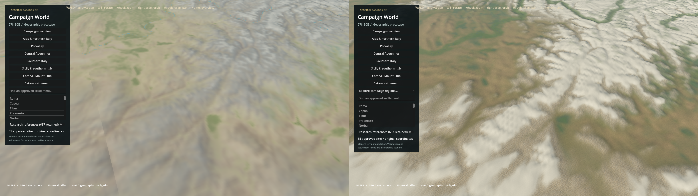
Campaign overview — BEFORE / AFTERLegacy avg FPS 143.9 → 143.9; p95 9.7 → 7.8 ms; RAM 1401.9 → 1176.5 MiB. Settled after: 143.9 FPS. 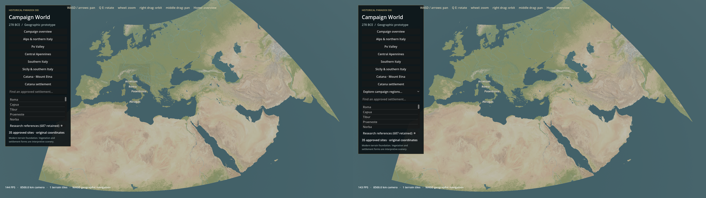
Same camera and fixed sun/atmosphere; water phase differs. Refresh-limited desktop measurements have uncontrolled background load.
Implementation, integrity, performance and remaining limitations Italian regression views alps: previous Italian quality pass (left), global expansion build (right) 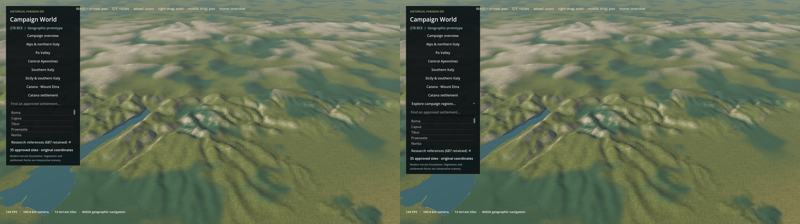
catana: previous Italian quality pass (left), global expansion build (right) 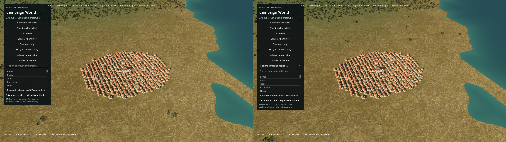